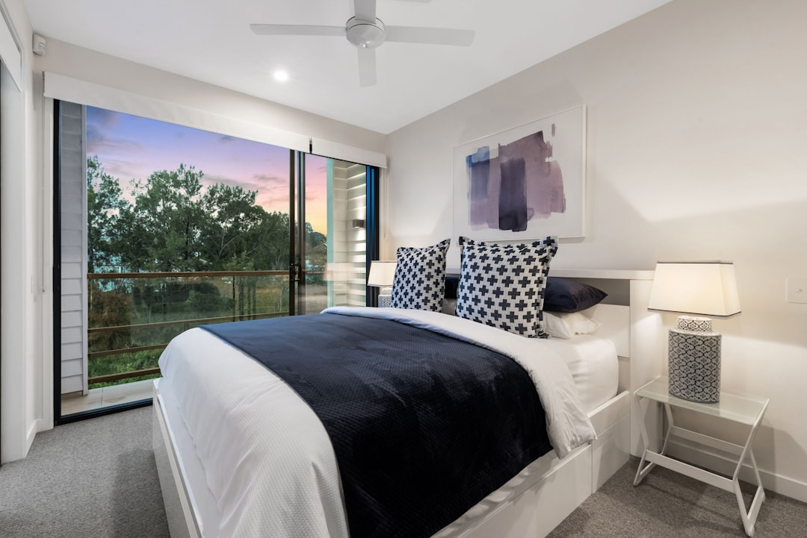

For homeowners comparing renovation builders brisbane options, the useful starting point is not style alone, but scope, approval risk, budget range and whether the builder suits the house type.
Renovation Builders Brisbane Explained
The source page for Renovation Builders Brisbane separates renovation work into kitchen upgrades, bathroom renovations, Queenslander projects, house extensions, full home renovations and heritage work. That is a useful decision tree because each path changes the quote conversation. A kitchen can be mostly cabinetry, benchtops, layout and finishes, while an extension or raise and build-under project asks harder questions about structure, approvals, access and sequencing.
Before asking for a quote, write the project as a scope rather than a wish list. Name the rooms affected, whether walls or the footprint may change, and whether plumbing, electrical, flooring or painting are expected. If the home is a Queenslander or has heritage considerations, put that in the first brief so the builder can respond to character details, council requirements and documentation needs early.
What The Published Cost Ranges Actually Tell You
The prices on the source page are best read as starting bands, not promises. Kitchen renovations are listed at $25,000 to $60,000 plus, bathroom renovations at $22,000 to $35,000 plus, extensions from $150,000, and full home renovations from $150,000 plus. The FAQ adds that a full home renovation in Brisbane typically ranges from $150,000 to $500,000 plus, with a standard 3 to 4 bedroom home renovation from $250,000 to $450,000.
Those ranges are useful because they separate smaller room upgrades from whole-property work. If a quote sits outside the range, the question is not whether it is automatically wrong. Ask what assumptions changed: structural work, fixtures, documentation, access, heritage overlay, under-house work, or the number of trades involved. A transparent quote should make those drivers visible.
- Ask whether cabinetry, fixtures, flooring, plumbing and electrical work are included.
- Ask how provisional sums or allowances are handled.
- Ask which parts depend on approvals or documentation.
Approvals And Timing Questions For Brisbane Homes
The source page says council approval is required when renovations alter the building footprint or structure, while internal-only renovations typically do not require planning approval. It also says a building permit is needed for structural alterations, extensions and significant layout changes, and that heritage overlay properties require additional approval. Treat that as a prompt to confirm the pathway with a building certifier or town planner before locking scope.
Timing should be discussed in phases. The published guide lists feasibility at 2 to 4 weeks, design and documentation at 2 to 4 months, pre-construction at 2 to 4 weeks, then construction time. It also lists kitchen renovations at 4 to 8 weeks, bathroom renovations at 2 to 4 weeks, and full home renovations at 5 to 12 months including approvals. A useful comparison is available in this related Brisbane renovation guide, especially for homeowners still shaping the brief.
Who This Applies To
This guide is most relevant to Brisbane homeowners who already know they want professional building help, but still need to decide the right type of project conversation. It suits people comparing a targeted kitchen or bathroom upgrade, a full home renovation, an extension, a Queenslander renovation, or work on a home with possible heritage constraints.
It is less useful for owners seeking only decoration, furniture selection or a single minor trade visit. The questions here assume the project may involve multiple trades, documentation, fixtures, layout changes, building permits or council approval. If the work is purely cosmetic, the quote brief can be simpler. If the work touches structure or footprint, the first conversation should include approval responsibility, project staging and who coordinates the required specialists.
How To Read Builder Credentials Without Overclaiming
The source page states that participating builders hold current QBCC licences and that the published service refers to HIA and Master Builders Queensland membership. Those signals can help with initial screening, but homeowners should still ask direct project questions. A licence does not replace a clear scope, and an association membership does not tell you whether a particular builder is suited to a character home, bathroom layout change or staged full-house renovation.
Ask for the licence name that will appear on the contract, who supervises day-to-day work, and whether similar projects have involved Queenslander details, VJ walls, timber restoration, raise and build-under work, or heritage overlay requirements. For larger projects, also ask how variations are approved in writing. That protects the budget conversation when hidden conditions or design changes appear after work begins.
Quote Brief Checklist
A strong quote request gives the builder enough information to price the same job another builder is pricing. Include photos, existing plans if available, the rooms affected, any preferred fixtures, whether you expect design-build service, and whether you already know about heritage or structural issues. If you want a single point of contact from concept to completion, say that upfront because the source page lists that as part of full home renovation service.
For kitchen and bathroom work, describe whether the current layout stays or changes. For extensions and full renovations, identify whether extra living space, a second storey, a granny flat, or whole-property transformation is being considered. The better the brief, the easier it is to compare inclusions, timing assumptions and approval responsibilities instead of comparing headline totals alone.
- Define the project type. Separate a room upgrade from an extension, full renovation, Queenslander project or heritage-sensitive job before requesting prices.
- List approval unknowns. Write down any structural, footprint, layout or heritage questions that may need a certifier, town planner or council pathway.
- Compare inclusions. Check whether each quote covers fixtures, trades, documentation, project management, allowances and likely variations.
- Confirm credentials. Ask for the relevant QBCC licence details and who will supervise the work on site.
| Project type | Published cost or timing signal | Question to ask before comparing quotes |
|---|---|---|
| Kitchen renovation | $25,000 to $60,000 plus, 4 to 8 weeks | Does the quote include cabinetry, finishes, plumbing, electrical and layout changes? |
| Bathroom renovation | $22,000 to $35,000 plus, 2 to 4 weeks | Are fixtures, waterproofing scope, layout changes and trade sequencing clearly included? |
| Extension or full renovation | From $150,000 plus, full renovations 5 to 12 months including approvals | Who manages design, permits, approvals, staging and variations? |
This guide covers Brisbane home renovation scope, costs, approvals, timing and quote comparison questions.